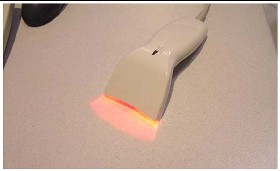

Operating Documentation
Direction 5193574-800, Rev# 22
LightSpeed 7.X Service Methods
Module Version 1.0, Version Date 4/22/10
Operating Documentation |
| Required Persons | Preliminary Reqs | Procedure | Finalization |
|---|---|---|---|
| 1 | Not Applicable | Not Applicable | Not Applicable |
Use the system tests in the following sections to exercise all aspects of the system and to ensure system integrity before releasing to the customer. Although the mean, standard deviation, and resolution specifications do not apply during system functional tests, treat any artifact or image anomaly as a failure.
Verify that:
All table mechanical alignment procedures are completed.
The IQ test passed.
All options are installed and operational.
If you encounter a failure during the system tests:
Record any evidence of artifacts, such as rings, streaks, shading, cupping, noise, or center artifacts.
Correct artifacts, system test, or image series failures when they occur.
Record failure information in the comment section of the GE Form e4879.
Scanning modes, including Cardiac.
Installed hardware options, including:
UPS operation
Cardiac monitor
Remote monitor
Bar code Reader
Image transfer (if the network is operational)
Confirm that customer network features are operational, based on options ordered and the network.
Modem, if it is installed
Saving an image to DVD
Injector functional tests
AW functional tests
Filming/camera functional tests
SmartStep
Locate the white service CD that ships with the system, located in the tech pub tray of the lean cart.
Load the CD into the laptop drive. Look under the Functional Checks tab located on the left hand side. Run the System Scanning Test procedure.
Record all pass/fail information on the GE e4879 form.
The UPS goes into a backup mode when the power fails. Confirm that you can shut down the console and the table is operational before the loss of battery power.
Follow the procedure in the UPS startup/shutdown procedure.
The remote monitor displays the same images as shown on the console image monitor.
The bar code reader is operational and data is displayed.
From the APPLICATION screen, select [NEW PATIENT].
Enter the Patient ID.
Using the barcode reader, scan a bar code to verify the information shown here.
Illustration 1: Barcode Reader

If installed, confirm the following:
An image can be filmed, saved to DVD, and networked to another network device or AWW.
The Nomoto injector is operational, and all setup and calibration procedures are completed.
All other installed injectors must power on.
The SmartStep option is operational. Set up a SmartStep scan and confirm that the foot switch and the hand switch operate.
CARDIAC MONITOR SETUP
Install these cables on the gantry option interface panel
| CABLE | VCT | VCT 7.2 |
| NEC (power cord to wall outlet) | Yes | No |
| IEC (power cord to gantry) | No | Yes |
| Cat 5 (cable between monitor and gantry) | Yes | Yes |
| Lemo connector (between monitor and gantry) | Yes | Yes |
| Ground Connection | NA | Yes |
Turn on the monitor. Follow the monitor self test setup procedure using the document shipped with the system.
From the APPLICATION screen, select [NEW PATIENT]. Fill out:
Patient ID: GE Test
Name: Cardiac Functional System Functional Test
Select from Protocol Menu
User
Chest
On the dark blue bar on the scan monitor select Gating "On"
Check for presence of these items:
Heart rate on the gantry display board
Cardiac pulses shown on the screen
Gating BPM displayed on the screen
ECG trace highlighted on the screen
PATIENT SCHEDULER
On the scan desktop select [Patient scheduler]
Select the button labeled [Update]
The customer list should be present select [Export data]
Send a test image to a workstation [AWW] or [what ever is available].
This section is complete when all of the above items pass.
Check all appropriate boxes on the GE Form e4879.